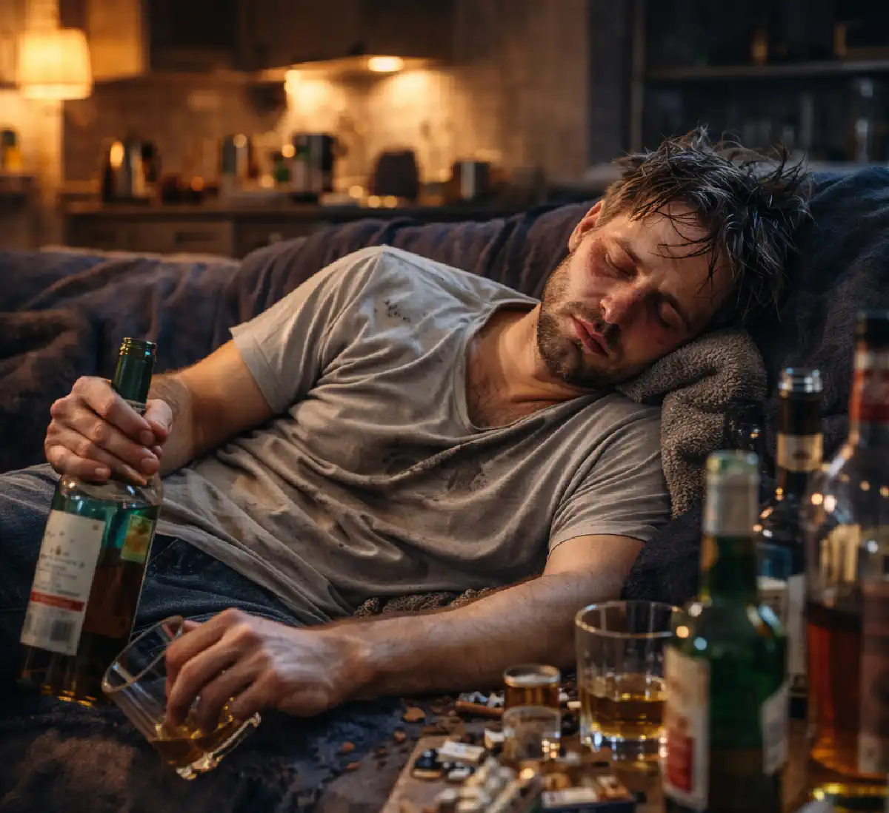

+38(068) 79 72 782
+38(068) 79 72 782Що робити якщо людина п'є кілька днів
Не чекайте ускладнень: допомога при запої доступна вже сьогодні


Безкоштовна консультація, працюємо цілодобово 24/7
Не чекайте ускладнень: допомога при запої доступна вже сьогодні

Ситуація, коли людина вживає алкоголь кілька днів поспіль, трапляється досить часто. Такий стан зазвичай називають багатоденним запоєм. Для родичів це серйозне випробування: людина може ставати дратівливою, погано спати, відмовлятися від їжі, відчувати виражену слабкість і погіршення самопочуття. Багатоденне вживання алкоголю — це не просто «шкідлива звичка», а стан, який може призвести до серйозної інтоксикації організму та небезпечних ускладнень з боку серця, печінки, нервової системи і психіки.
Якщо людина п’є кілька днів поспіль, важливо діяти спокійно і грамотно. Своєчасна допомога та звернення до лікаря дозволяють значно знизити ризики і допомогти людині швидше відновитися. Найчастіше багатоденне вживання алкоголю починається зі звичайного застілля або спроби «розслабитися» після стресу. Однак уже через кілька днів організм опиняється у стані вираженої інтоксикації. Продукти розпаду алкоголю — насамперед ацетальдегід — чинять токсичний вплив на тканини, порушують роботу внутрішніх органів і викликають тяжке похмілля.
Багатоденний запій також призводить до порушення водно-електролітного балансу. Організм втрачає велику кількість рідини і мікроелементів, що посилює симптоми інтоксикації. Саме тому людина може відчувати сильну спрагу, сухість у роті та загальну слабкість. Окрему небезпеку становить психологічний стан пацієнта. Після кількох днів вживання алкоголю часто виникає тривожність, дратівливість, відчуття внутрішнього напруження. Сон стає поверхневим або повністю порушується. У деяких випадках можуть з’являтися панічні стани або виражене безсоння.
Для родичів і близьких людей важливо не ігнорувати подібний стан. Чим довше триває запій, тим вищим є навантаження на внутрішні органи і тим складніше організму самостійно відновитися. При тривалому вживанні алкоголю може знадобитися медична допомога, спрямована на виведення токсинів і стабілізацію стану пацієнта. Правильна тактика в такій ситуації — спостерігати за станом людини, забезпечити їй спокій, достатню кількість рідини і за потреби звернутися за консультацією лікаря. Медична допомога дозволяє безпечно перервати запій, зменшити симптоми інтоксикації і прискорити відновлення організму. Своєчасне втручання особливо важливе, якщо багатоденне вживання алкоголю повторюється регулярно. У таких випадках мова може йти вже про формування алкогольної залежності, яка потребує комплексного медичного підходу і професійної підтримки.
Багатоденне вживання алкоголю найчастіше пов’язане з формуванням алкогольної залежності. При регулярному прийомі спиртного поступово змінюється робота центральної нервової системи. Алкоголь починає впливати на нейромедіаторні механізми мозку, що відповідають за відчуття розслаблення, зниження тривожності та відчуття задоволення. З часом організм звикає до постійної присутності етанолу, і для досягнення звичного ефекту потрібна все більша доза. Поступово формується стан, за якого людині стає важко контролювати частоту і кількість вживаного алкоголю. Коли подібна звичка закріплюється, вживання спиртного може затягуватися на кілька днів. Людина починає використовувати алкоголь не лише для відпочинку чи свята, а й як спосіб тимчасово полегшити психологічне напруження, упоратися зі стресом або покращити сон. У деяких випадках багатоденне вживання розвивається на тлі емоційного виснаження, тривалих переживань або несприятливих життєвих обставин. Алкоголь починає сприйматися як засіб швидкого полегшення стану, хоча насправді він лише тимчасово маскує проблему.
Окрему роль відіграє так званий механізм «похмелення». Після кількох днів вживання в організмі накопичуються продукти розпаду алкоголю, насамперед ацетальдегід, який чинить виражений токсичний вплив на органи і тканини. На цьому тлі розвивається стан алкогольної інтоксикації, що супроводжується головним болем, слабкістю, вираженою спрагою, нудотою, прискореним серцебиттям і тривожністю. Сон стає поверхневим або повністю порушується, з’являється дратівливість і відчуття внутрішнього напруження. Коли людина намагається різко припинити вживання алкоголю після кількох днів запою, симптоми похмілля можуть ставати особливо вираженими. Погане самопочуття, тремтіння в тілі, тривожність і безсоння створюють сильний дискомфорт. У такій ситуації нова доза алкоголю справді може на короткий час полегшити стан, оскільки тимчасово знижує прояви інтоксикації і зменшує неприємні відчуття. Однак цей ефект нетривалий.
Через певний час симптоми повертаються, а загальний стан організму продовжує погіршуватися. Таким чином формується замкнене коло: людина вживає алкоголь, щоб зменшити прояви похмілля, але кожна нова доза лише посилює токсичне навантаження на організм. Поступово епізод вживання затягується, і багатоденний запій стає дедалі тривалішим. На цьому тлі зростає навантаження на серцево-судинну систему, печінку, підшлункову залозу та нервову систему. Порушується обмін речовин, посилюється зневоднення, знижується здатність організму самостійно відновлюватися. Саме тому при тривалому вживанні алкоголю нерідко потрібна медична допомога, спрямована на усунення інтоксикації та безпечне відновлення функцій організму.
Родичам важливо зберігати спокій і не погіршувати ситуацію конфліктами. Тиск, звинувачення і скандали рідко допомагають людині зупинитися і можуть лише посилити стрес і внутрішнє напруження. У стані алкогольної інтоксикації людина нерідко стає дратівливою, емоційно нестабільною і може болісно реагувати на будь-які спроби тиску. Тому насамперед важливо створити максимально спокійну і безпечну обстановку. Близьким людям варто зосередитися не на з’ясуванні стосунків, а на підтримці і спостереженні за станом людини. Бажано забезпечити їй спокій, можливість відпочити і відновити сили. На тлі багатоденного вживання алкоголю організм часто перебуває у стані зневоднення, тому корисно пропонувати воду або інші безалкогольні напої невеликими порціями. Також варто звернути увагу на харчування. Навіть легка їжа може допомогти організму почати поступово відновлюватися.
Не менш важливо уважно стежити за самопочуттям людини. Після кількох днів вживання алкоголю можуть з’являтися виражена слабкість, прискорене серцебиття, стрибки артеріального тиску, нудота, тремор рук і порушення сну. Іноді спостерігаються тривожність, дратівливість і сильне безсоння. У деяких випадках стан може погіршуватися досить швидко, тому важливо не ігнорувати тривожні симптоми.
Якщо самопочуття людини викликає занепокоєння, правильним рішенням буде звернутися за медичною допомогою. Консультація лікаря дозволяє оцінити ступінь інтоксикації, перевірити загальний стан організму і визначити, чи потрібна детоксикаційна терапія. Лікар може допомогти безпечно перервати запій і знизити навантаження на внутрішні органи. Дуже важливо пам’ятати, що самостійно впоратися з тяжким запоєм буває складно, особливо якщо він триває кілька днів. У таких ситуаціях професійна медична допомога дозволяє швидше стабілізувати стан людини, зменшити симптоми інтоксикації і запобігти можливим ускладненням.
Тривале вживання алкоголю чинить виражений токсичний вплив на організм. Етанол і продукти його розпаду порушують обмінні процеси, посилюють зневоднення і створюють підвищене навантаження на життєво важливі органи. При багатоденному вживанні алкоголь починає впливати практично на всі системи організму, поступово погіршуючи їхню роботу. Особливо чутливою до впливу алкоголю є серцево-судинна система. На тлі інтоксикації може частішати серцебиття, підвищуватися артеріальний тиск, збільшуватися ризик різних порушень серцевого ритму. У деяких людей після кількох днів вживання з’являються виражена тахікардія, відчуття перебоїв у роботі серця і сильна слабкість.
Не менш серйозне навантаження припадає на печінку, оскільки саме цей орган відповідає за переробку і виведення продуктів розпаду алкоголю. При тривалому вживанні розвивається токсичне ураження печінки, порушується її здатність знешкоджувати шкідливі речовини і підтримувати нормальний обмін речовин. З часом такі процеси можуть призводити до запальних змін та інших захворювань печінки. Страждає і нервова система. Багатоденний запій часто супроводжується тривожністю, дратівливістю, порушеннями сну і підвищеною емоційною нестабільністю. Людина може відчувати виражену втому, зниження концентрації уваги і відчуття внутрішнього напруження. Сон стає поверхневим або повністю порушується, що додатково погіршує загальний стан.
Алкоголь також чинить негативний вплив на шлунково-кишковий тракт. Подразнюється слизова оболонка шлунка, збільшується ризик запальних процесів, може порушуватися робота підшлункової залози. На тлі інтоксикації нерідко виникають болі в животі, нудота, зниження апетиту і загальне погіршення травлення. Окрему увагу слід приділяти стану психіки. При тривалому вживанні алкоголю можуть з’являтися виражена тривога, емоційна нестабільність, порушення поведінки та проблеми з орієнтацією. У тяжких випадках можливі серйозні психічні ускладнення, що потребують медичної допомоги.
Іноді люди намагаються зупинити запій самостійно. У легких випадках це справді можливо, однак при тривалому вживанні алкоголю такий підхід може бути небезпечним. Після кількох днів вживання організм перебуває у стані вираженої інтоксикації, а різке припинення прийому алкоголю може супроводжуватися неприємними і іноді досить тяжкими симптомами. Однією з основних проблем стає виражений похмільний синдром. Він виникає через накопичення продуктів розпаду алкоголю, які чинять токсичний вплив на організм. Людина може відчувати сильний головний біль, слабкість, нудоту, спрагу і загальне погіршення самопочуття. Ці симптоми нерідко змушують знову вживати алкоголь, щоб тимчасово полегшити стан.
Додаткову складність створює зневоднення організму. Алкоголь порушує водно-електролітний баланс, через що людина втрачає значну кількість рідини і мікроелементів. На цьому тлі з’являється сильна спрага, сухість у роті, запаморочення і загальна слабкість. Часто виникають і порушення сну. Після багатоденного вживання алкоголю людині буває важко заснути, сон стає поверхневим і неспокійним. Безсоння посилює втому, дратівливість і погіршує загальний стан нервової системи.
Нерідко на тлі припинення вживання посилюється тривожність і внутрішнє напруження. Людина може відчувати занепокоєння, дратівливість, зниження концентрації уваги і виражений дискомфорт. У деяких випадках подібні стани супроводжуються тремтінням у руках і прискореним серцебиттям. Також можливі стрибки артеріального тиску і почастішання пульсу. Алкоголь впливає на судинний тонус і роботу серцево-судинної системи, тому після тривалого вживання тиск може коливатися, а серце працювати з підвищеним навантаженням.
Без медичної допомоги людині буває важко відновитися, особливо якщо запій тривав кілька днів. Лікар може оцінити стан організму, підібрати безпечну схему лікування і провести детоксикацію. Медична допомога дозволяє зменшити прояви інтоксикації, відновити водно-електролітний баланс і допомогти організму швидше повернутися до нормальної роботи.
Існують ситуації, коли медична допомога потрібна якомога швидше. Після кількох днів вживання алкоголю стан людини може різко погіршитися, оскільки організм перебуває у стані вираженої інтоксикації та виснаження. У такі моменти важливо уважно спостерігати за самопочуттям і не ігнорувати тривожні ознаки. Одним із насторожливих симптомів є сильна слабкість, за якої людині важко встати або виконувати навіть прості дії. Такий стан може свідчити про зневоднення і серйозне навантаження на організм. Не менш тривожною ознакою вважається виражена тахікардія. Прискорене серцебиття після тривалого вживання алкоголю може супроводжуватися відчуттям перебоїв у роботі серця і сильною втомою.
Іноді на тлі запою спостерігається підвищення артеріального тиску, яке супроводжується головним болем, запамороченням і шумом у вухах. Такі стани збільшують навантаження на серце і судини. Окремої уваги потребує сплутаність свідомості. Людина може погано орієнтуватися в тому, що відбувається, відчувати труднощі з концентрацією і неадекватно реагувати на навколишню обстановку.
Також може виникати сильна блювота, що призводить до втрати рідини та посилення зневоднення. Характерним симптомом після тривалого вживання алкоголю є тремор рук, який нерідко супроводжується тривожністю і внутрішнім напруженням. Крім того, часто розвивається виражене безсоння і підвищена тривожність, через що людина не може повноцінно відпочити і відновити сили. У таких випадках виклик лікаря-нарколога додому дозволяє швидко оцінити стан пацієнта і розпочати лікування. Медична допомога допомагає зменшити симптоми інтоксикації та знизити ризик ускладнень. Звернутися за наркологічною допомогою можна в таких містах як (Київ | Харків | Одеса | Дніпро | Львів | Запоріжжя | Черкаси).
Детоксикація спрямована на виведення токсичних продуктів розпаду алкоголю та відновлення нормальної роботи організму. Після тривалого вживання спиртного в організмі накопичуються речовини, які чинять токсичний вплив на внутрішні органи, нервову систему та серцево-судинну систему. Саме тому після запою людина може відчувати слабкість, головний біль, нудоту, тривожність і порушення сну.
Основою лікування є інфузійна терапія, за якої використовуються спеціальні розчини для краплинного введення. Така терапія допомагає відновити водно-електролітний баланс, зменшити зневоднення і прискорити виведення токсинів з організму. Одночасно проводиться підтримка роботи серцево-судинної системи і нормалізація обмінних процесів. Під час детоксикації також приділяється увага відновленню сну і зниженню тривожності. Після багатоденного вживання алкоголю нервова система перебуває у стані сильного напруження, тому важливо м’яко стабілізувати психоемоційний стан пацієнта. Комплексна терапія допомагає зменшити симптоми інтоксикації, покращити самопочуття і створити умови для поступового відновлення організму після запою.
Термін відновлення після запою залежить від кількох факторів. Насамперед значення має тривалість вживання алкоголю, оскільки чим довше організм перебував у стані інтоксикації, тим більше часу потрібно для нормалізації обмінних процесів і відновлення роботи внутрішніх органів. Важливу роль відіграє і загальний стан здоров’я людини. Якщо у пацієнта вже є захворювання серцево-судинної системи, печінки, шлунково-кишкового тракту або нервової системи, період відновлення може бути тривалішим.
Також на швидкість відновлення впливає вік пацієнта. З віком обмінні процеси в організмі сповільнюються, тому виведення токсинів і відновлення функцій органів може відбуватися повільніше. Додатковим фактором можуть бути хронічні захворювання, які посилюють навантаження на організм під час інтоксикації і потребують більш уважного медичного контролю. У більшості людей самопочуття починає помітно покращуватися протягом 1–3 днів після проведення детоксикації. Поступово зменшується слабкість, нормалізується сон, знижується тривожність і відновлюється апетит. Однак повне відновлення організму може займати більше часу, особливо якщо запій був тривалим. У цей період важливо дотримуватися режиму відпочинку, питного балансу і за потреби виконувати рекомендації лікаря для підтримки організму.
Після виходу із запою важливо не лише відновити фізичний стан організму, а й знизити ризик повторного вживання алкоголю. Навіть після покращення самопочуття у людини може зберігатися психологічна тяга до спиртного, тому на цьому етапі особливо важливо приділити увагу подальшій профілактиці залежності.
Одним із важливих кроків є консультація лікаря-нарколога, який може оцінити стан пацієнта, визначити ступінь залежності та надати рекомендації щодо подальшого лікування і відновлення. Нерідко потрібна психологічна підтримка, оскільки алкогольна залежність зачіпає не лише фізичне здоров’я, а й емоційний стан людини. Робота з психологічними причинами вживання допомагає краще зрозуміти фактори, які призводять до повторних епізодів вживання алкоголю.
Велике значення має нормалізація режиму сну і відпочинку. Після запою нервова система часто залишається у стані напруження, тому відновлення повноцінного сну допомагає стабілізувати психоемоційний стан. Поступові зміни способу життя, включно з більш здоровими звичками, регулярним відпочинком і зниженням рівня стресу, також відіграють важливу роль у підтриманні тверезості. Комплексний підхід, що включає медичну підтримку, психологічну допомогу та зміну звичок, значно підвищує ймовірність стійкого результату і допомагає людині знизити ризик повторних запоїв.
Іноді лікування вдома виявляється недостатнім. У деяких ситуаціях стан пацієнта потребує більш інтенсивної медичної допомоги та постійного спостереження спеціалістів. У таких випадках може бути рекомендоване лікування в умовах стаціонару, де є можливість контролювати стан людини цілодобово і своєчасно реагувати на будь-які зміни самопочуття.
Стаціонарне лікування найчастіше необхідне при тривалих запоях, коли організм перебуває у стані вираженої інтоксикації та сильного виснаження. У подібних ситуаціях можуть спостерігатися тяжкі симптоми, включно з вираженою слабкістю, порушеннями серцевого ритму, стрибками артеріального тиску, сильною тривожністю або безсонням. Такі стани потребують більш уважного медичного контролю та комплексної терапії.
Також стаціонар може бути рекомендований при високому ризику ускладнень, особливо якщо у пацієнта є хронічні захворювання серця, печінки, нервової системи або інших органів. При вираженій алкогольній залежності лікування в клініці дозволяє провести повноцінну детоксикацію, стабілізувати стан організму та розпочати подальшу терапію залежності. В умовах стаціонару пацієнт отримує комплексне медичне лікування, спрямоване на виведення токсинів, відновлення роботи внутрішніх органів і нормалізацію загального стану. Постійне спостереження лікарів дозволяє контролювати динаміку лікування і своєчасно коригувати терапію, що значно підвищує безпеку та ефективність лікування.
Профілактика відіграє важливу роль у лікуванні алкогольної залежності і допомагає знизити ризик повторних запоїв. Після стабілізації стану важливо приділити увагу не лише фізичному відновленню організму, а й факторам, які можуть провокувати повторне вживання алкоголю.
Регулярні консультації лікаря дозволяють контролювати стан пацієнта, оцінювати динаміку відновлення і за потреби коригувати подальшу тактику лікування. Важливе значення має і психологічна допомога, оскільки залежність часто пов’язана з емоційними переживаннями, стресом і внутрішнім напруженням. Робота зі спеціалістом допомагає людині краще розуміти причини вживання алкоголю та знаходити більш здорові способи справлятися зі складними життєвими ситуаціями.
Велику роль відіграє підтримка сім’ї та близьких людей. Спокійна і підтримувальна атмосфера допомагає людині почуватися впевненіше і легше проходити період відновлення. Також важливо поступово змінювати звички та спосіб життя, приділяти увагу режиму сну, відпочинку та відновленню фізичних ресурсів організму. Формування стійкої мотивації до тверезості є одним із ключових факторів довгострокового результату. Чим раніше розпочата робота із залежністю та профілактикою повторних епізодів вживання, тим вища ймовірність стабільного відновлення і збереження здоров’я.
Наркологічна служба UmbrellaPlus надає професійну медичну допомогу пацієнтам з алкогольної залежністю та станами алкогольної інтоксикації. Спеціалісти клініки працюють з різними формами залежності та допомагають пацієнтам безпечно вийти зі стану запою, відновити самопочуття та розпочати лікування.
У межах допомоги проводиться консультація лікаря-нарколога, під час якої оцінюється стан пацієнта, тривалість вживання алкоголю та можливі ризики для здоров’я. На основі цієї інформації підбирається оптимальна тактика лікування. Одним із основних напрямів є виведення із запою та проведення детоксикаційної терапії, спрямованої на виведення токсинів і відновлення нормальної роботи організму.
За потреби проводиться комплексне лікування алкогольної залежності, яке може включати медичну підтримку, відновлювальну терапію та рекомендації щодо подальшої реабілітації. Допомога може бути надана як в умовах клініки, так і з виїздом лікаря додому, що особливо важливо при тяжкому самопочутті пацієнта. Своєчасне звернення за медичною допомогою дозволяє безпечно стабілізувати стан людини, зменшити прояви інтоксикації та розпочати ефективне лікування залежності.
Телефон для консультації і виклику доктора: +38(050-021-69-57)

Так, ми суворо дотримуємося повної конфіденційності на всіх етапах лікування. Інформація про пацієнта, діагноз та проходження терапії не передається третім особам. Звернення до нас не тягне за собою постановку на облік. Ви можете бути впевнені у безпеці та анонімності.
Програма лікування розробляється індивідуально після консультації з фахівцем. Враховуються вид залежності, її тривалість, фізичний та психологічний стан пацієнта. Такий підхід дозволяє підвищити ефективність терапії та знизити ризик зриву. Ми не використовуємо шаблонні рішення.
Так, ми супроводжуємо пацієнтів і після основного курсу лікування. Проводяться консультації, рекомендації щодо адаптації та профілактики рецидивів. За потреби можлива подальша психологічна підтримка. Це допомагає зберегти результат та повернутися до повноцінного життя.
Номер телефону:
+380 (68) 797 27 82
+380 (50) 021 69 57
Адресу наркологічного центра вашого міста уточнюйте за
телефоном
Працюємо: Київ, Одеса, Львів, Харків, Дніпро, Запоріжжя,
Черкасах, Чугуєві, Чорноморську, Кам'янському
Telegram: t.me/umbrellaplus
Графік работы: Цілодобово